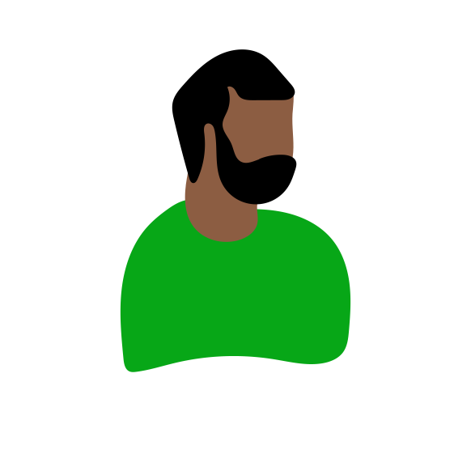
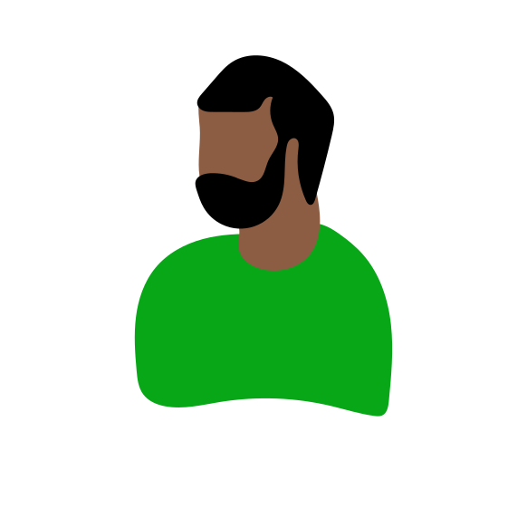

Interviews
Circulair-Zuid & circulariteit
Respondenten
Bart
- 28 jaar oud
- Theater manager bij Cinema Cartoons
- Woont in Antwerpen-Zuid
Flore
- 25 jaar oud
- Studente cultuurmanagment aan UA
- Woont in Antwerpen
Peter
- 27 jaar oud
- Werknemer restaurant te Antwerpen-Zuid
- Woont in Antwerpen?

Wat doet u met uw afval?
“Wij hebben het geluk dat we heel dichtbij een sorteerstraatje wonen.”
- Bart
Zelf initiatieven verminderen afval?
“Ik zal misschien sneller iets in een verpakking kopen waarvan ik weet dat het fair gemaakt is dan iets zonder verpakking dat niet fair is gemaakt.”
- Flore

Initiatieven voor afval waar u woont?
“Ik denk dat wij in onze straat de enige mensen zijn die een GFT-zak buiten zetten. Heel veel mensen weten ook niet dat je GFT kunt buitenzetten.”
- Flore
Het begrip circulariteit?
“In tegenstelling tot de klassieke productie, distributie of consumptie manieren vinden om loops te creëren.”
- Bart
Zelf bezig met circulariteit?
“Op het einde van de rit merk je dat dat hele interessante concepten zijn maar je eindigt toch wel ook met de standaard consumptie.”
- Bart
“Mijn kledingkast is een combinatie van goedkope kringloopwinkelkleren en dan een paar iets duurdere stukken van bedrijven die wel bezig zijn me fair mensen behandelen en circulariteit.”
- Flore
Genoeg aandacht voor circulariteit?
“Het duurzame moet eigenlijk meer aansluiten bij het consumptiepatroon van de stedeling om kans te maken.”
- Bart
Al gehoord van Circulair-Zuid?
“Triest weinig eigenlijk.”
- Flore
Hoe liefst kennismaken circulariteit?
“Euh, wacht een circulaire winkel? Wauw!”
- Flore
“Er moet gewoon meer uit de mensen zelf komen.”
- Peter
